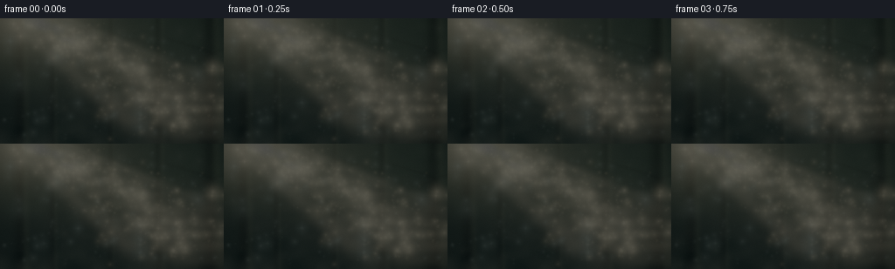
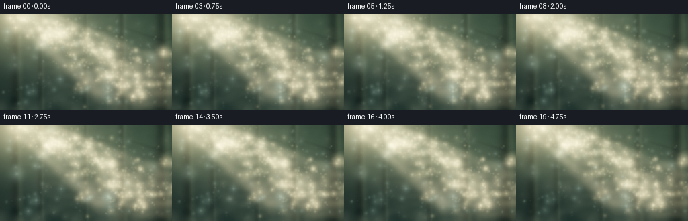
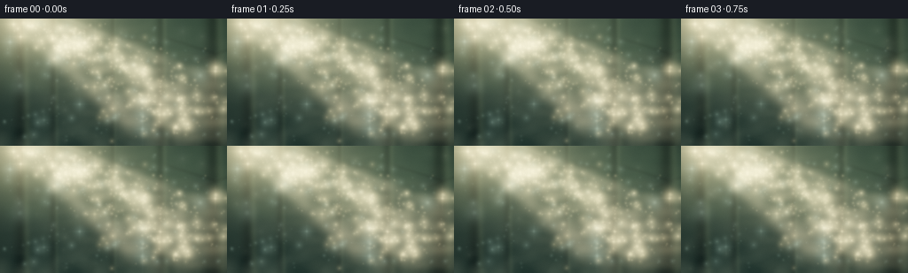
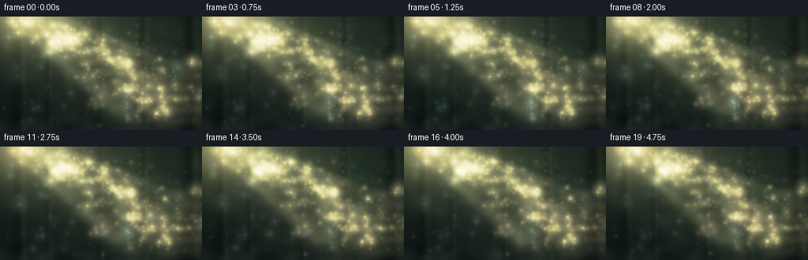
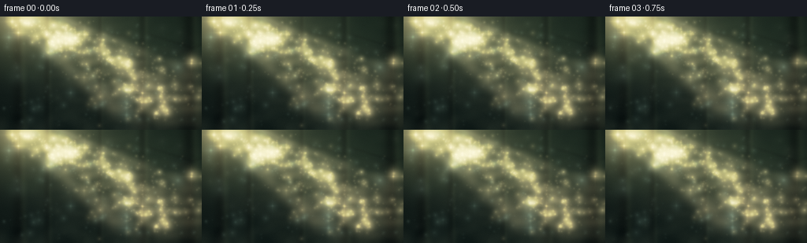
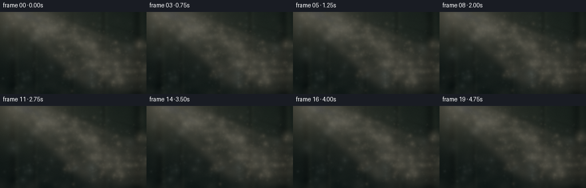

CODING AGENTS AS PIXEL WORLD MODELS
traex/DeepSeek-V4.1-Flash · phygen_079
点击播放 · 原生 RGB 像素
逐轮保存的候选
回放视频、检查图与代码变化。
每份候选均可单独播放。实际图片检查记录在下方工具轨迹中。
候选 01播放与检查图
点击播放 · 原生 RGB 像素


展开代码变化
--- 上一保存版本
+++ 本次保存版本
@@ -0,0 +1,330 @@
+from __future__ import annotations
+
+from pathlib import Path
+
+import cv2
+import numpy as np
+from PIL import Image
+from scipy.ndimage import gaussian_filter, shift
+
+from artifact_io import save
+
+
+ROOT = Path(__file__).resolve().parent
+WIDTH, HEIGHT, FRAME_COUNT, FPS = 256, 144, 20, 4.0
+SCALE = 3
+HW, HH = WIDTH * SCALE, HEIGHT * SCALE
+
+
+def smooth_noise(rng: np.random.Generator, coarse: int) -> np.ndarray:
+ """Smooth value noise spanning the whole high-resolution frame."""
+ small = rng.random((coarse, coarse)).astype(np.float32)
+ noise = cv2.resize(small, (HW, HH), interpolation=cv2.INTER_CUBIC)
+ noise = gaussian_filter(noise, 5 * SCALE, mode="reflect")
+ noise -= noise.min()
+ return noise / max(float(noise.max()), 1e-6)
+
+
+def fbm(rng: np.random.Generator, octaves: tuple[tuple[int, float], ...]) -> np.ndarray:
+ field = np.zeros((HH, HW), dtype=np.float32)
+ total = 0.0
+ for coarse, weight in octaves:
+ field += smooth_noise(rng, coarse) * weight
+ total += weight
+ field /= total
+ return field
+
+
+def make_background() -> np.ndarray:
+ rng = np.random.default_rng(1907)
+ yy, xx = np.mgrid[0:HH, 0:HW].astype(np.float32)
+ x = xx / (HW - 1)
+ y = yy / (HH - 1)
+
+ # A muted forest gradient, deepest at the ground and edges.
+ top = np.array([45, 61, 51], dtype=np.float32)
+ middle = np.array([31, 51, 43], dtype=np.float32)
+ bottom = np.array([13, 25, 23], dtype=np.float32)
+ lower_mix = np.clip(y * 1.28, 0, 1)[..., None]
+ image = top * (1 - y[..., None]) + middle * y[..., None]
+ image = image * (1 - lower_mix * 0.72) + bottom * (lower_mix * 0.72)
+
+ broad = fbm(rng, ((5, 0.30), (11, 0.26), (25, 0.23), (53, 0.21)))
+ fine = fbm(rng, ((31, 0.30), (77, 0.35), (151, 0.35)))
+ canopy = np.clip((0.66 - y) * 2.2 + (broad - 0.48) * 1.25, 0, 1)
+ foliage_color = np.stack(
+ (24 + 22 * fine, 43 + 27 * fine, 32 + 15 * fine), axis=-1
+ )
+ image = image * (1 - canopy[..., None] * 0.45) + foliage_color * canopy[..., None] * 0.45
+
+ # Out-of-focus trunks give scale without pulling attention from the beam.
+ trunk_layer = np.zeros((HH, HW), dtype=np.float32)
+ rim_layer = np.zeros((HH, HW), dtype=np.float32)
+ trunk_data = [
+ (0.075, 0.020, 0.70, 0.015, 0.70),
+ (0.205, 0.012, 0.80, 0.010, 0.45),
+ (0.505, 0.010, 0.68, 0.009, 0.34),
+ (0.735, 0.016, 0.90, 0.011, 0.50),
+ (0.930, 0.027, 0.84, 0.018, 0.80),
+ ]
+ for cx, width, bend, frequency, strength in trunk_data:
+ center = cx + bend * 0.035 * np.sin(y * frequency * 12 + cx * 7)
+ edge_softness = width * (0.86 + 0.24 * y)
+ trunk = np.exp(-0.5 * ((x - center) / edge_softness) ** 2)
+ trunk *= (0.72 + 0.28 * broad) * strength
+ trunk_layer = np.maximum(trunk_layer, trunk)
+ rim = np.exp(-0.5 * ((x - center - edge_softness * 1.35) / (edge_softness * 0.55)) ** 2)
+ rim_layer = np.maximum(rim_layer, rim * strength * (0.35 + 0.65 * broad))
+
+ image *= (1 - trunk_layer[..., None] * 0.48)
+ image += rim_layer[..., None] * np.array([92, 102, 67], dtype=np.float32) * 0.22
+
+ # A few thin branches break up the distant silhouettes.
+ branch = np.zeros((HH, HW), dtype=np.float32)
+ for bx, by, angle, length, width in [
+ (0.15, 0.20, -0.45, 0.28, 0.004),
+ (0.73, 0.15, 0.52, 0.25, 0.0035),
+ (0.88, 0.33, -0.60, 0.19, 0.003),
+ (0.48, 0.13, 0.30, 0.17, 0.0025),
+ ]:
+ dx, dy = np.cos(angle), np.sin(angle)
+ along = (x - bx) * dx + (y - by) * dy
+ across = -(x - bx) * dy + (y - by) * dx
+ along_curve = along + 0.025 * np.sin(along * 22 + bx * 10)
+ mask = np.exp(-0.5 * (across / width) ** 2)
+ mask *= (along >= 0) & (along <= length)
+ mask *= 0.65 + 0.35 * (along / length)
+ branch = np.maximum(branch, mask)
+ branch = gaussian_filter(branch, 1.5 * SCALE)
+ image *= (1 - branch[..., None] * 0.34)
+
+ # Sun source and the soft atmospheric halo around it.
+ sx, sy = 0.105, -0.045
+ sun_r2 = (x - sx) ** 2 + ((y - sy) * 0.84) ** 2
+ glow = np.exp(-sun_r2 / 0.047) * 0.82 + np.exp(-sun_r2 / 0.19) * 0.23
+ image += glow[..., None] * np.array([255, 228, 161], dtype=np.float32)
+
+ # Main shaft: a widening volume of lit haze, fractured by canopy noise.
+ dx, dy = 0.70, 0.72
+ rx, ry = x - sx, y - sy
+ along = rx * dx + ry * dy
+ across = rx * dy - ry * dx
+ beam_noise = fbm(rng, ((8, 0.30), (19, 0.26), (43, 0.23), (97, 0.21)))
+ width_main = 0.033 + np.clip(along, 0, 1.35) * 0.085
+ core = np.exp(-0.5 * (across / width_main) ** 2)
+ halo = np.exp(-0.5 * (across / (width_main * 2.55)) ** 2)
+ broken = 0.34 + 0.90 * beam_noise
+ beam = (core * 0.88 + halo * 0.20) * broken
+ beam *= np.clip((along + 0.08) / 0.30, 0, 1)
+ beam *= np.clip((1.45 - along) / 0.42, 0, 1)
+ beam *= 0.90 + 0.10 * np.sin(y * 58 + broad * 7)
+ image += beam[..., None] * np.array([255, 229, 166], dtype=np.float32) * 0.66
+
+ # Two narrow companion rays keep the light from feeling like a flat cone.
+ for offset, gain, width_factor in [(-0.165, 0.24, 0.42), (0.145, 0.17, 0.31)]:
+ companion = np.exp(-0.5 * ((across - offset * (0.55 + along)) / (width_main * width_factor)) ** 2)
+ companion *= broken * np.clip((along + 0.02) / 0.28, 0, 1)
+ companion *= np.clip((1.28 - along) / 0.40, 0, 1)
+ image += companion[..., None] * np.array([255, 232, 175], dtype=np.float32) * gain
+
+ # Mist settles low in the scene and catches a little of the sun path.
+ low_mist = np.clip((y - 0.47) / 0.53, 0, 1) ** 1.7
+ mist_texture = fbm(rng, ((7, 0.24), (17, 0.28), (41, 0.26), (83, 0.22)))
+ wisps = np.clip((mist_texture - 0.43) * 2.8, 0, 1) * low_mist
+ image += wisps[..., None] * np.array([132, 142, 118], dtype=np.float32) * 0.18
+
+ # Gentle edge darkening and a faint cool shadow cast.
+ vignette = np.clip(1.08 - 0.48 * ((x - 0.5) ** 2 * 1.6 + (y - 0.5) ** 2), 0.50, 1.0)
+ image *= vignette[..., None]
+ image -= (1 - canopy[..., None]) * np.array([0, 5, 5], dtype=np.float32) * 0.10
+ return np.clip(image, 0, 255).astype(np.float32)
+
+
+def make_particles() -> dict[str, np.ndarray]:
+ rng = np.random.default_rng(72451)
+ count = 560
+ sx, sy, dx, dy = 0.105, -0.045, 0.70, 0.72
+
+ # Most motes are gathered in the illuminated air, with a sparse ambient field.
+ in_beam = rng.random(count) < 0.76
+ along = rng.uniform(-0.02, 1.18, count)
+ width = 0.050 + np.clip(along, 0, 1.35) * 0.105
+ cross = rng.normal(0, 1, count) * width * (1.05 if True else 1.0)
+ px = sx + dx * along - dy * cross
+ py = sy + dy * along + dx * cross
+ ambient_x = rng.uniform(0.015, 0.985, count)
+ ambient_y = rng.uniform(0.05, 0.96, count)
+ px = np.where(in_beam, px, ambient_x)
+ py = np.where(in_beam, py, ambient_y)
+
+ keep = (px > -0.02) & (px < 1.02) & (py > 0.02) & (py < 1.02)
+ px, py, in_beam = px[keep], py[keep], in_beam[keep]
+
+ depth = rng.beta(1.3, 2.0, px.size)
+ sigma = (0.72 + 7.3 * depth**2.25) * SCALE
+ alpha = (0.14 + 0.70 * depth**1.7) * (0.68 if True else 1.0)
+ alpha *= np.where(in_beam, 1.0, 0.52)
+ phase = rng.uniform(0, 2 * np.pi, px.size)
+ twinkle = rng.uniform(0, 2 * np.pi, px.size)
+ speed = rng.uniform(0.7, 1.35, px.size)
+
+ # The brightest foreground particles get a restrained optical glint.
+ glint = (depth > 0.72) & (rng.random(px.size) < 0.42)
+ return {
+ "x": px.astype(np.float32),
+ "y": py.astype(np.float32),
+ "depth": depth.astype(np.float32),
+ "sigma": sigma.astype(np.float32),
+ "alpha": alpha.astype(np.float32),
+ "phase": phase.astype(np.float32),
+ "twinkle": twinkle.astype(np.float32),
+ "speed": speed.astype(np.float32),
+ "in_beam": in_beam,
+ "glint": glint,
+ }
+
+
+def add_particle(
+ image: np.ndarray,
+ cx: float,
+ cy: float,
+ sigma: float,
+ color: np.ndarray,
+ alpha: float,
+ glint: bool,
+) -> None:
+ radius = max(2, int(np.ceil(sigma * 3.2)))
+ ix, iy = int(round(cx)), int(round(cy))
+ x0, x1 = max(0, ix - radius), min(HW, ix + radius + 1)
+ y0, y1 = max(0, iy - radius), min(HH, iy + radius + 1)
+ if x0 >= x1 or y0 >= y1:
+ return
+ yy, xx = np.mgrid[y0:y1, x0:x1]
+ r2 = (xx - cx) ** 2 + (yy - cy) ** 2
+ gaussian = np.exp(-0.5 * r2 / max(sigma * sigma, 0.08))
+ core = np.exp(-0.5 * r2 / max((sigma * 0.27) ** 2, 0.035))
+ patch = image[y0:y1, x0:x1]
+ patch += (gaussian * 0.74 + core * 0.46)[..., None] * color * alpha
+
+ if glint and sigma > 1.0:
+ horizontal = np.exp(-0.5 * ((yy - cy) / max(sigma * 0.16, 0.55)) ** 2)
+ horizontal *= np.exp(-np.abs(xx - cx) / max(sigma * 2.0, 1.0))
+ vertical = np.exp(-0.5 * ((xx - cx) / max(sigma * 0.16, 0.55)) ** 2)
+ vertical *= np.exp(-np.abs(yy - cy) / max(sigma * 2.0, 1.0))
+ patch += (horizontal + vertical)[..., None] * color * alpha * 0.16
+
+
+def render_frame(
+ background: np.ndarray,
+ particles: dict[str, np.ndarray],
+ mist_fields: tuple[np.ndarray, np.ndarray],
+ index: int,
+) -> np.ndarray:
+ t = index / FPS
+ image = background.copy()
+
+ # Slow, coherent mist advection across the lower half of the frame.
+ mist_a, mist_b = mist_fields
+ drift_a = shift(
+ mist_a,
+ shift=(0.45 * SCALE * np.sin(t * 0.20), 1.1 * SCALE * t),
+ order=1,
+ mode="reflect",
+ )
+ drift_b = shift(
+ mist_b,
+ shift=(0.35 * SCALE * np.cos(t * 0.23), -0.65 * SCALE * t),
+ order=1,
+ mode="reflect",
+ )
+ yy = np.linspace(0, 1, HH, dtype=np.float32)[:, None]
+ xx = np.linspace(0, 1, HW, dtype=np.float32)[None, :]
+ beam_zone = np.exp(-0.5 * (((xx - (0.30 + 0.42 * yy)) / 0.24)) ** 2)
+ low = np.clip((yy - 0.38) / 0.62, 0, 1) ** 1.45
+ mist = np.clip((drift_a * 0.64 + drift_b * 0.36 - 0.42) * 2.15, 0, 1)
+ mist *= low * (0.36 + 0.64 * beam_zone)
+ image += mist[..., None] * np.array([165, 162, 129], dtype=np.float32) * (0.15 + 0.012 * np.sin(t * 0.7))
+
+ # Airborne particles drift upward and side-to-side at depth-dependent rates.
+ px = particles["x"] + (0.0015 + 0.0024 * (1 - particles["depth"])) * t
+ px += 0.0020 * np.sin(t * 0.56 + particles["phase"]) * (0.35 + particles["depth"])
+ py = particles["y"] - (0.0018 + 0.0018 * particles["depth"]) * t
+ py += 0.0017 * np.cos(t * 0.47 + particles["phase"] * 1.31) * (0.35 + particles["depth"])
+ shimmer = 0.76 + 0.24 * np.sin(t * 1.35 + particles["twinkle"])
+
+ # Draw distant particles first so foreground bokeh sits cleanly above them.
+ order = np.argsort(particles["depth"])
+ for i in order:
+ cx = float(px[i] * (HW - 1))
+ cy = float(py[i] * (HH - 1))
+ sigma = float(particles["sigma"][i]) * (1 + 0.05 * np.sin(t * 0.4 + particles["phase"][i]))
+ if particles["in_beam"][i]:
+ color = np.array([255, 231, 171], dtype=np.float32)
+ color = color * np.array([1.0, 0.96 + 0.04 * shimmer[i], 0.86 + 0.12 * shimmer[i]])
+ else:
+ color = np.array([162, 202, 188], dtype=np.float32)
+ alpha = float(particles["alpha"][i] * shimmer[i])
+ add_particle(image, cx, cy, sigma, color, alpha, bool(particles["glint"][i]))
+
+ # A second, much softer population of larger suspended water droplets.
+ rng = np.random.default_rng(820 + index)
+ for _ in range(34):
+ cx = rng.uniform(0.02, 0.98) * HW
+ cy = rng.uniform(0.05, 0.98) * HH
+ near_beam = np.exp(-0.5 * (((cx / HW) - (0.30 + 0.42 * (cy / HH))) / 0.22) ** 2)
+ sigma = rng.uniform(3.2, 7.0) * SCALE
+ alpha = rng.uniform(0.025, 0.095) * (0.45 + 0.55 * near_beam)
+ tint = np.array([206, 214, 177], dtype=np.float32)
+ add_particle(image, cx, cy, sigma, tint, alpha, False)
+
+ # Subtle atmospheric breathing in the sun shaft.
+ pulse = 1.0 + 0.018 * np.sin(t * 0.83) + 0.008 * np.sin(t * 1.91 + 0.6)
+ image *= pulse
+
+ # Bloom only the brightest highlights, preserving the quiet forest.
+ highlights = np.clip(image - 178, 0, None)
+ bloom = gaussian_filter(highlights, 7.5 * SCALE)
+ image += bloom * 0.30
+
+ # Final filmic grade and restrained grain.
+ image = np.log1p(image / 34) * 34
+ image *= np.array([1.018, 1.004, 0.968], dtype=np.float32)
+ image += np.array([-1.2, 0.2, 1.8], dtype=np.float32)
+ grain_rng = np.random.default_rng(4000 + index)
+ grain = grain_rng.normal(0, 1.35, (HH, HW, 1)).astype(np.float32)
+ image += grain
+ return np.clip(image, 0, 255).astype(np.uint8)
+
+
+def main() -> None:
+ background = make_background()
+ particles = make_particles()
+ rng = np.random.default_rng(9123)
+ mist_fields = (smooth_noise(rng, 13), smooth_noise(rng, 21))
+
+ frames_hi = [render_frame(background, particles, mist_fields, i) for i in range(FRAME_COUNT)]
+ frames = np.stack(
+ [
+ cv2.resize(frame, (WIDTH, HEIGHT), interpolation=cv2.INTER_AREA)
+ for frame in frames_hi
+ ]
+ )
+ save(frames, ROOT)
+
+ video_path = ROOT / "output.mp4"
+ writer = cv2.VideoWriter(
+ str(video_path),
+ cv2.VideoWriter_fourcc(*"mp4v"),
+ FPS,
+ (WIDTH, HEIGHT),
+ )
+ for frame in frames:
+ writer.write(cv2.cvtColor(frame, cv2.COLOR_RGB2BGR))
+ writer.release()
+
+ # Keep a single-frame preview for quick visual inspection.
+ Image.fromarray(frames[7]).save(ROOT / "preview.png")
+
+
+if __name__ == "__main__":
+ main()
候选 02播放与检查图
点击播放 · 原生 RGB 像素


展开代码变化
--- 上一保存版本
+++ 本次保存版本
@@ -101,7 +101,7 @@
# Sun source and the soft atmospheric halo around it.
sx, sy = 0.105, -0.045
sun_r2 = (x - sx) ** 2 + ((y - sy) * 0.84) ** 2
- glow = np.exp(-sun_r2 / 0.047) * 0.82 + np.exp(-sun_r2 / 0.19) * 0.23
+ glow = np.exp(-sun_r2 / 0.047) * 0.60 + np.exp(-sun_r2 / 0.19) * 0.25
image += glow[..., None] * np.array([255, 228, 161], dtype=np.float32)
# Main shaft: a widening volume of lit haze, fractured by canopy noise.
@@ -113,12 +113,12 @@
width_main = 0.033 + np.clip(along, 0, 1.35) * 0.085
core = np.exp(-0.5 * (across / width_main) ** 2)
halo = np.exp(-0.5 * (across / (width_main * 2.55)) ** 2)
- broken = 0.34 + 0.90 * beam_noise
- beam = (core * 0.88 + halo * 0.20) * broken
+ broken = 0.19 + 1.02 * beam_noise
+ beam = (core * 0.72 + halo * 0.29) * broken
beam *= np.clip((along + 0.08) / 0.30, 0, 1)
beam *= np.clip((1.45 - along) / 0.42, 0, 1)
beam *= 0.90 + 0.10 * np.sin(y * 58 + broad * 7)
- image += beam[..., None] * np.array([255, 229, 166], dtype=np.float32) * 0.66
+ image += beam[..., None] * np.array([255, 229, 166], dtype=np.float32) * 0.62
# Two narrow companion rays keep the light from feeling like a flat cone.
for offset, gain, width_factor in [(-0.165, 0.24, 0.42), (0.145, 0.17, 0.31)]:
@@ -246,10 +246,10 @@
image += mist[..., None] * np.array([165, 162, 129], dtype=np.float32) * (0.15 + 0.012 * np.sin(t * 0.7))
# Airborne particles drift upward and side-to-side at depth-dependent rates.
- px = particles["x"] + (0.0015 + 0.0024 * (1 - particles["depth"])) * t
- px += 0.0020 * np.sin(t * 0.56 + particles["phase"]) * (0.35 + particles["depth"])
- py = particles["y"] - (0.0018 + 0.0018 * particles["depth"]) * t
- py += 0.0017 * np.cos(t * 0.47 + particles["phase"] * 1.31) * (0.35 + particles["depth"])
+ px = particles["x"] + (0.0030 + 0.0044 * (1 - particles["depth"])) * t
+ px += 0.0034 * np.sin(t * 0.56 + particles["phase"]) * (0.35 + particles["depth"])
+ py = particles["y"] - (0.0022 + 0.0024 * particles["depth"]) * t
+ py += 0.0028 * np.cos(t * 0.47 + particles["phase"] * 1.31) * (0.35 + particles["depth"])
shimmer = 0.76 + 0.24 * np.sin(t * 1.35 + particles["twinkle"])
# Draw distant particles first so foreground bokeh sits cleanly above them.
@@ -286,10 +286,10 @@
bloom = gaussian_filter(highlights, 7.5 * SCALE)
image += bloom * 0.30
- # Final filmic grade and restrained grain.
- image = np.log1p(image / 34) * 34
+ # Filmic highlight rolloff that retains a readable green-shadow world.
+ image = 255.0 * (1.0 - np.exp(-np.maximum(image, 0) / 150.0))
image *= np.array([1.018, 1.004, 0.968], dtype=np.float32)
- image += np.array([-1.2, 0.2, 1.8], dtype=np.float32)
+ image += np.array([-1.0, 0.2, 1.8], dtype=np.float32)
grain_rng = np.random.default_rng(4000 + index)
grain = grain_rng.normal(0, 1.35, (HH, HW, 1)).astype(np.float32)
image += grain
候选 03播放与检查图
点击播放 · 原生 RGB 像素


展开代码变化
--- 上一保存版本
+++ 本次保存版本
@@ -286,8 +286,11 @@
bloom = gaussian_filter(highlights, 7.5 * SCALE)
image += bloom * 0.30
- # Filmic highlight rolloff that retains a readable green-shadow world.
- image = 255.0 * (1.0 - np.exp(-np.maximum(image, 0) / 150.0))
+ # Measured exposure with a soft shoulder, keeping the forest readable while
+ # reserving near-white values for the sunlit particles.
+ image *= 0.72
+ shoulder = np.maximum(image - 145.0, 0.0)
+ image = np.where(image <= 145.0, image, 145.0 + 110.0 * (1.0 - np.exp(-shoulder / 62.0)))
image *= np.array([1.018, 1.004, 0.968], dtype=np.float32)
image += np.array([-1.0, 0.2, 1.8], dtype=np.float32)
grain_rng = np.random.default_rng(4000 + index)
可观测工具轨迹
实际执行的命令与返回图片。
命令 1exit 0
/bin/bash -c "pwd && rg --files -g 'prompt.txt' -g 'GENERATION_RULES.md' -g 'task_spec.json' -g '"'!*.mp4'"' -g '"'!*.png'"' -g '"'!*.jpg'"' | sort"
命令 2exit 0
/bin/bash -c "find . -maxdepth 2 -type f | sort | sed -n '1,160p'"
命令 3exit 0
/bin/bash -c 'cat prompt.txt'
命令 4exit 0
/bin/bash -c 'cat GENERATION_RULES.md'
命令 5exit 0
/bin/bash -c 'cat task_spec.json'
命令 6exit 0
/bin/bash -c "sed -n '1,260p' artifact_io.py"
命令 7exit 0
/bin/bash -c "python - <<'PY'
import sys
print(sys.version)
for name in ['numpy','PIL','scipy','cv2','imageio','matplotlib']:
try:
m=__import__(name)
print(name, getattr(m,'__version__','ok'))
except Exception as e:
print(name, 'MISSING', e)
PY"命令 8exit 0
/bin/bash -c 'python generate.py'
命令 9exit 0
/bin/bash -c "python - <<'PY' from PIL import Image import numpy as np for f in ['preview.png','frames/00.png','frames/07.png','frames/19.png']: im=np.array(Image.open(f)) print(f, im.shape, 'mean', im.mean(axis=(0,1)).round(1), 'p95', np.percentile(im,95), 'max', im.max(), 'dark%', (im.mean(2)<25).mean().round(3)) PY"
命令 10exit 0
/bin/bash -c "python generate.py && python - <<'PY' from PIL import Image import numpy as np for f in ['preview.png','frames/00.png','frames/07.png','frames/19.png']: im=np.array(Image.open(f)) print(f, 'mean', im.mean(axis=(0,1)).round(1), 'p95', np.percentile(im,95).round(1), 'max', im.max(), 'dark%', (im.mean(2)<25).mean().round(3)) PY"
命令 11exit 0
/bin/bash -c "python generate.py && python - <<'PY' from PIL import Image import numpy as np for f in ['preview.png','frames/00.png','frames/07.png','frames/19.png']: im=np.array(Image.open(f)) print(f, 'mean', im.mean(axis=(0,1)).round(1), 'p50', np.percentile(im,50).round(1), 'p95', np.percentile(im,95).round(1), 'p99.9', np.percentile(im,99.9).round(1), 'max', im.max()) PY"
命令 12exit 0
/bin/bash -c 'ffprobe -v error -show_entries stream=codec_name,width,height,r_frame_rate,nb_frames,duration -of default=noprint_wrappers=1 output.mp4 2>&1 || true; ls -lh generate.py output.mp4 pixels.npz inspection.png transition_check.png index.html'
命令 13exit 0
/bin/bash -c "python - <<'PY'
import json, cv2, numpy as np
from pathlib import Path
spec=json.loads(Path('task_spec.json').read_text())
z=np.load('pixels.npz')['pixels']
print('pixels.npz', z.shape, z.dtype)
print('expected', (spec['height'],spec['width'],spec['frames']))
frames=np.stack([cv2.imread(str(p)) for p in sorted(Path('frames').glob('*.png'))])
print('png frames',frames.shape)
d=np.abs(frames[1:].astype(np.int16)-frames[:-1].astype(np.int16))
print('motion mad min/mean/max', d.mean(axis=(1,2,3)).min().round(3), d.mean(axis=(1,2,3)).mean().round(3), d.mean(axis=(1,2,3)).max().round(3))
print('changed pixels per transition', [(x>2).any(2).sum() for x in d])
PY"命令 14exit 0
/bin/bash -c "python - <<'PY'
import cv2
from pathlib import Path
p=Path('output.mp4')
cap=cv2.VideoCapture(str(p))
frames=int(cap.get(cv2.CAP_PROP_FRAME_COUNT)); fps=cap.get(cv2.CAP_PROP_FPS)
w=int(cap.get(cv2.CAP_PROP_FRAME_WIDTH)); h=int(cap.get(cv2.CAP_PROP_FRAME_HEIGHT))
print({'frames':frames,'fps':fps,'size':(w,h),'duration':round(frames/fps,3),'opened':cap.isOpened()})
ok, frame=cap.read(); print('first decoded',ok, None if frame is None else frame.shape)
cap.release()
PY"命令 15exit 0
/bin/bash -c "python - <<'PY'
from PIL import Image
import numpy as np
a=np.array(Image.open('frames/00.png')).astype(float)
b=np.array(Image.open('frames/19.png')).astype(float)
# Print rough luminance shifts by thirds to confirm visible suspended-particle motion.
for name,sl in [('left',slice(0,85)),('center',slice(85,171)),('right',slice(171,256))]:
d=np.abs(b[:,sl]-a[:,sl]).mean(axis=(0,1))
print(name, d.round(2))
PY"命令 16exit 0
/bin/bash -c 'git status --short 2>/dev/null || true'
视觉工具实际返回图片 1
视觉工具实际返回图片 2

视觉工具实际返回图片 3
视觉工具实际返回图片 4
视觉工具实际返回图片 5

保存候选 3 份；完成命令 16 次；可验证图片返回 5 张。原始 API 响应与完整日志保留在本地。